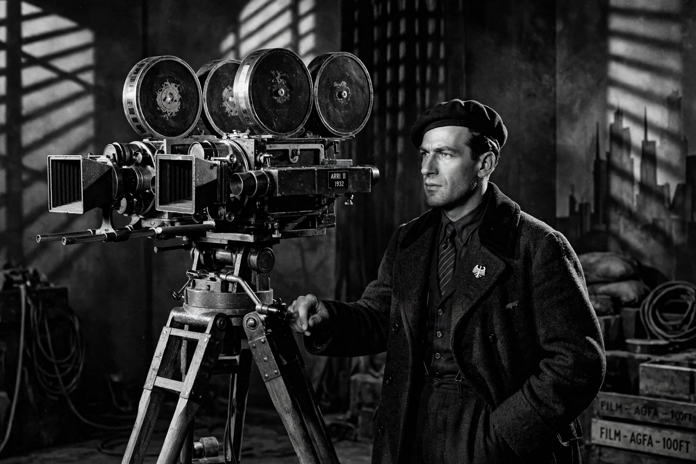

| Karl Freund | |
| Born | January 16, 1890, Königinhof, Bohemia, Austria-Hungary |
|---|---|
| Died | May 3, 1969 (aged 79), Santa Monica, California, U.S. |
| Occupation | Cinematographer, director |
| Years active | 1906–1957 |
| Awards | Academy Award for Best Cinematography (The Good Earth, 1937) |

Karl W. Freund, A.S.C. (January 16, 1890 – May 3, 1969) was a German-Bohemian cinematographer and director celebrated as a leading figure of German Expressionist cinema and later a pillar of classical Hollywood. His fluid, "unchained" camera on F. W. Murnau's The Last Laugh (1924) and his work on Fritz Lang's Metropolis (1927) redefined what the moving camera could do.
Freund began as a projectionist in Berlin at age fifteen and was a newsreel cameraman before becoming a feature cinematographer. In Weimar Germany he shot classics including The Golem (1920), The Last Laugh (1924) — whose subjective, mobile camera (the entfesselte Kamera) astonished international audiences — and Metropolis (1927), with its pioneering special photographic effects.
Freund emigrated to the United States in 1929 and joined Universal, photographing Dracula (1931) and Murders in the Rue Morgue (1932), and directing The Mummy (1932) and Mad Love (1935). Moving to MGM, he won the Academy Award for Best Cinematography for The Good Earth (1937). His later credits include Pride and Prejudice (1940) and Key Largo (1948).
In the 1950s Freund became a pioneer of television cinematography. At Desilu Productions he developed the three-camera technique with flat, even lighting that allowed I Love Lucy to be filmed before a live studio audience, a system that became the standard for the American sitcom. He founded the Photo Research Corporation and won further honors for his color temperature meter.